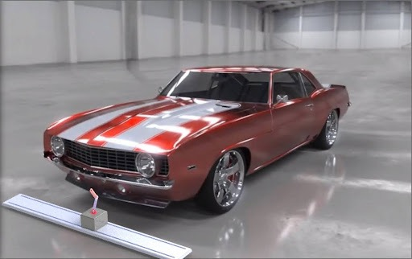
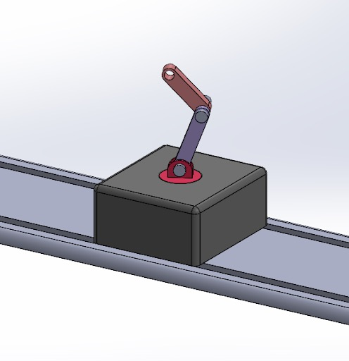
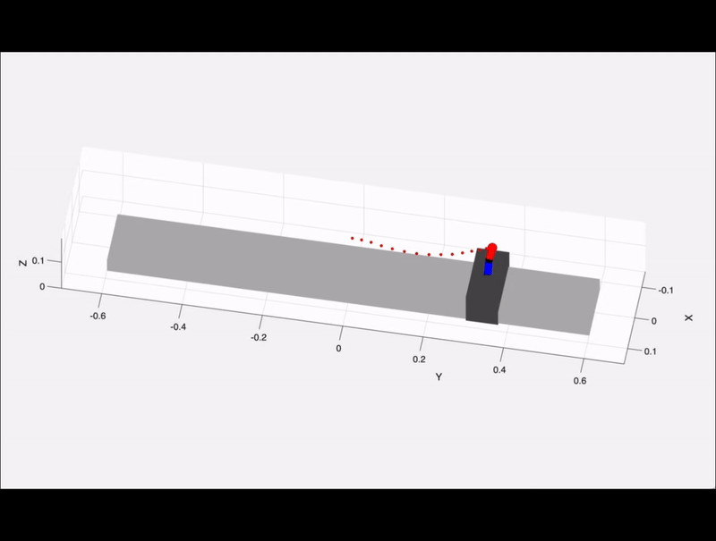

Surveillance Robot
Simulation • MATLAB • Trajectory Planning • Workspace Visualization • Forward/Inverse Kinematics


Autonomous Under-Vehicle Inspection Robot with PRRR Manipulator
Vehicle undercarriage inspection is typically performed using bulky equipment and manual operation, making the process slow, labor-intensive, and difficult to deploy in confined spaces. But how about a compact robotic inspection system capable of navigating and positioning sensors or tools for detailed inspection tasks?

A prismatic rail combined with three revolute joints enables the robot to translate along the vehicle’s length while orienting the end-effector to access hard-to-reach components underneath the chassis.